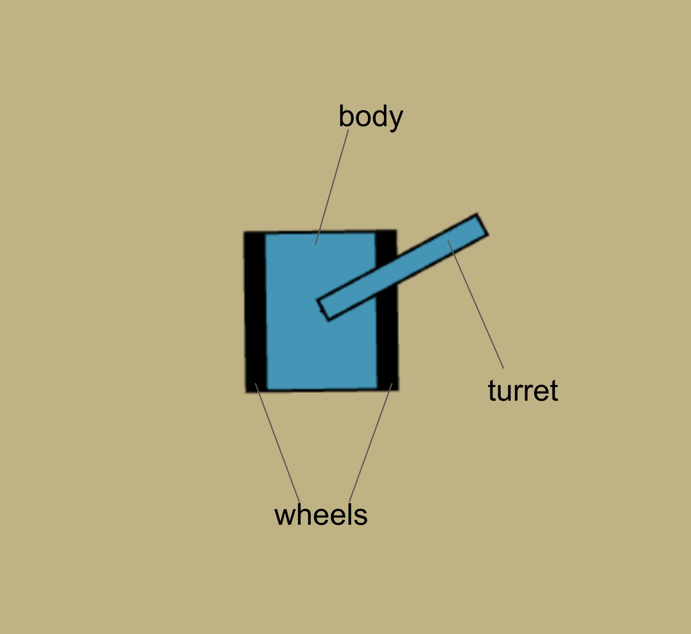
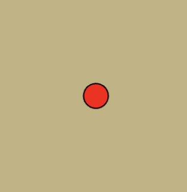
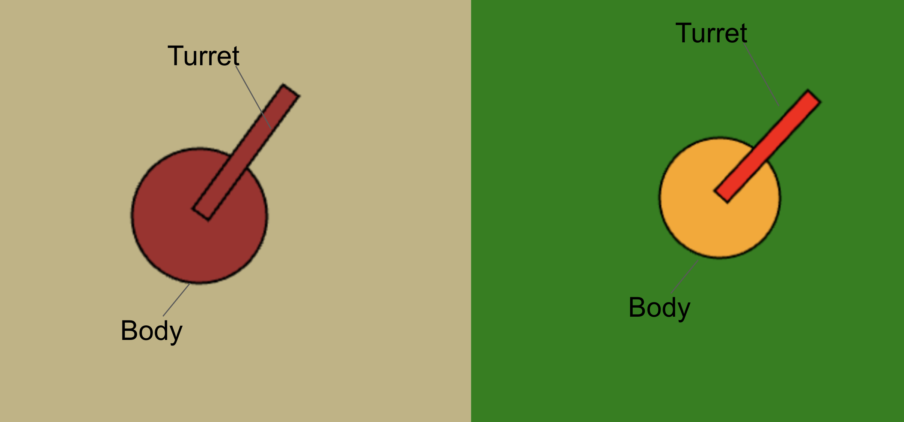

Play Game
Tiles:
Rocks
Rocks are tiles that are unbreakable by player shots, enemy shots, and mines. Player and enemy shells shatter on contact with rocks.
Sand
Sand are tiles that can be broken by player and enemy shots, and enemies can see you behind sand tiles.
Metal
Metals are tiles that have a unique hard crystal formations, allowing both player shells and enemy shells to bounce instead of spontaniously collapsing upon contact. Can make excellent trickshots!
Player Parts
Player Body
The body is the most important part of the Player Tank. It connects all different components of the tank. Upon hit, it may suffer minor damages or major damages that require five seconds of immobillity to fix. Sometimes, the damage is too major and causes the ammunition storage to spontaniously combust, leading to the death of all crew members.
Player Wheels
Wheels are responsible for movement. When commanded to move forward, they start at a slow speed and accelerate to the maximum speed. The maximum speed is slower while backing up as the drive sprockets, idlers, and return rollers are optimized for high-speed forward travel, and less so for reverse. When hit, it may suffer mninor damages or major damages that render the tank immobile for five seconds. In rare cases, the enemy shell can penetrate through the wheels into the body where crew members are more prone to dying.
Player Turret
Turret is the main offensive aspect of the Player's Tank. It allows for long range and precise targeting. Turrets can spin 360 degrees to ensure coverage from all fronts, but they spin slowly, so don't get flanked! Upon hit, the turret may get disabled - unusable for five seconds before it is repaired.
Player Mines
Mines can be dropped from the Player's Tank. These mines explode upon shot, and inflict large damage. It is an almost guarenteed kill if it manages to hit the Enemy Tank, but I warn, it also destroys the player.
Enemy parts
There are many different variations of the Enemy Tank with different abillities. Those are two examples of different colors.
Enemy Body
This is the main part of the Enemy's Tank. It is not as protected as the player's body due to the lack of sloped armor. Therefore, it is easy for the player to penetrate, although sometimes their shells will not.
Enemy Turret
This is the main offensive unit of the enemy. It shoots in bursts of usually three or four. It inflicts high damage and is extremely dangerous as multiple of them hit the player in a close timespan.
Main Gameplay Flow
The player must destroy all enemy tanks, and then they will automatically be deployed the next level.